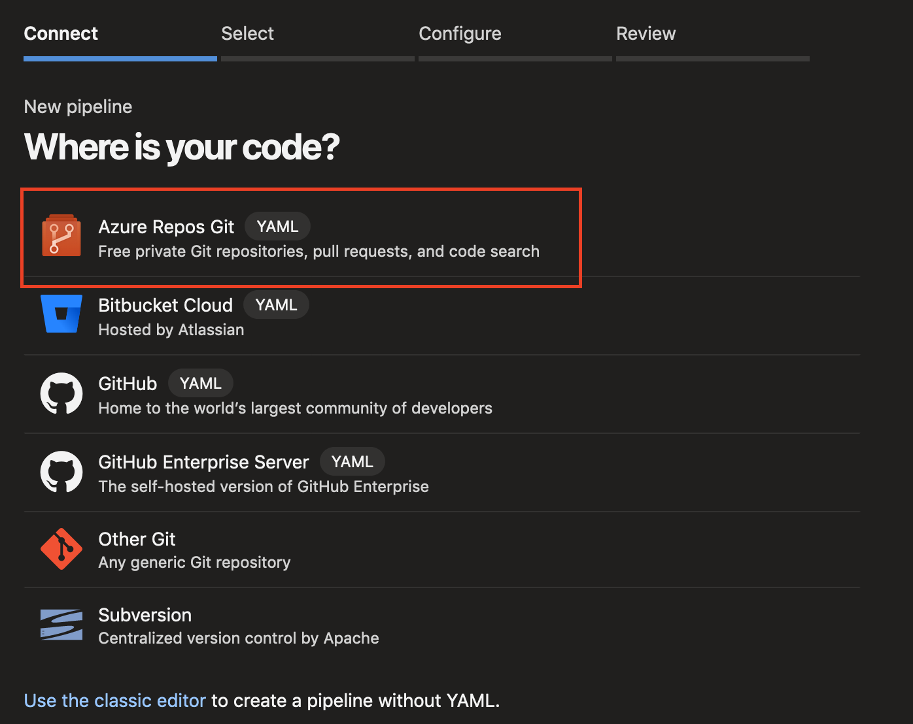
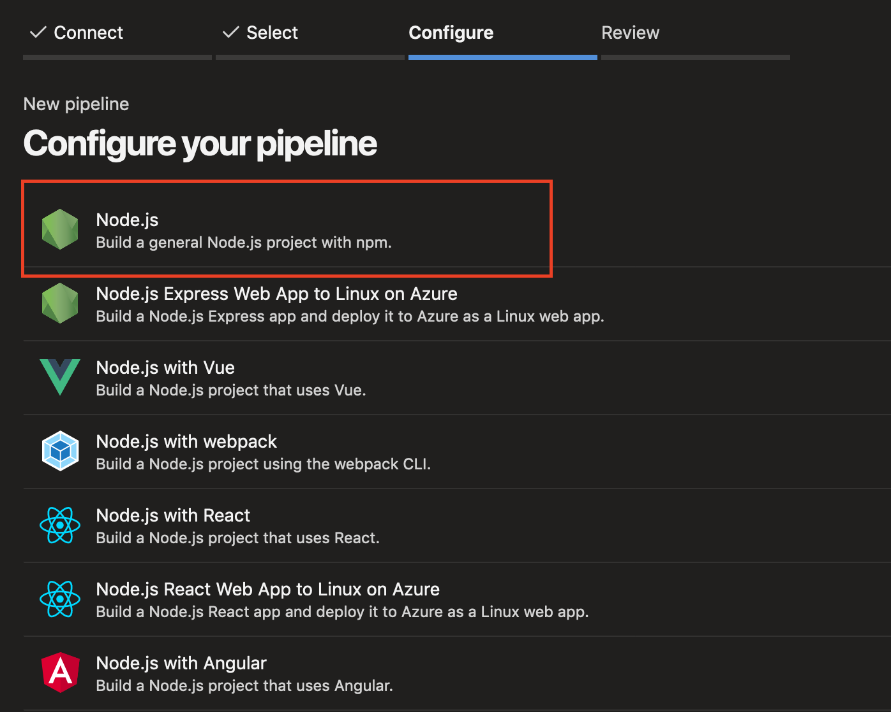
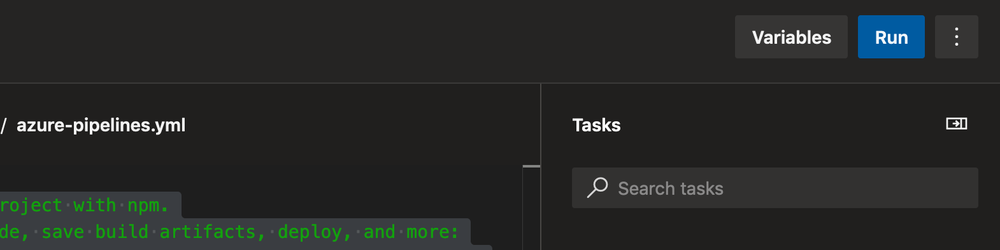
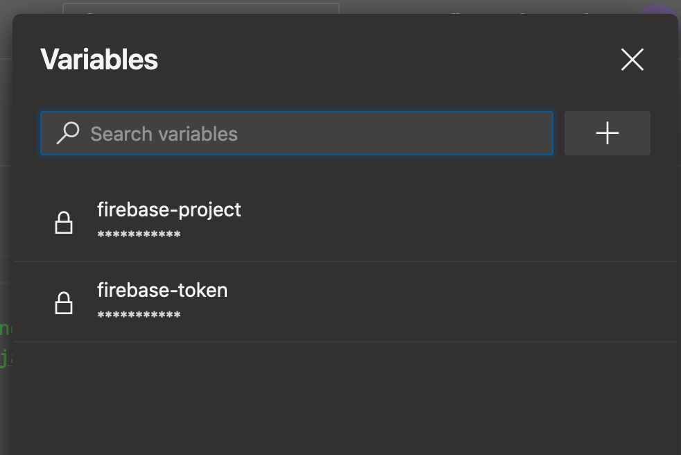
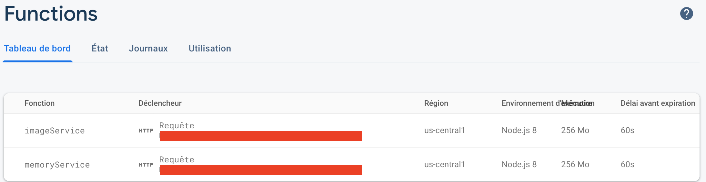

Firebase and Azure DevOps

Firebase and Azure DevOps
Firebase
As I have already mentioned in this article, Firebase is a service offered by Google for mobile and web developers to facilitate a large number of parts of application development:
- Authentication
- NoSql Database
- cloud function
- Storage (image, video, ...)
- Web application hosting
- Real-time database
- Test lab
- Crash reporting in real time
- Remote config
- Cloud messaging
It is therefore a very useful service for the rapid prototyping of an application and even for an application in production and all this for a very modest price.
Azure DevOps
Azure DevOps is a service offered by Microsoft and the direct descendant of VSTS and Team Foundation. It is an online service that allows you to manage a number of things:
- Backlog management (scrum, agile,...)
- Git directory management
- Test Plan Management
- Artifacts management
- Pipeline management
All the tools necessary to manage a development team, both from the point of view of the Product Owner and the developer.
Cloud function
Definition
Have you already done cloud functions? If you do not know this is a code that is triggered according to an event and starts processing. The most frequently encountered cases are:
- Sending an email when creating a user
- Receiving an http request
- Modifying a field in a database
The principle of a cloud function is that it is called "serverless". Therefore, there is no need to take care of the server that is located and no need to manage the load, since it is possible to create as many as one trigger triggered.
Many offers exist on the net to create and host cloud function:
- Microsoft with Azure Functions
- Google with GCP Cloud Function
- Google with Firebase Function
- IBM with IBM Cloud Function
- Parse with Cloud Code
- Amazon with AWS Lambda
- Red Hat with OpenShift Cloud Function
We therefore encounter more and more of them and it becomes important to know this type of service.
Sample
To practice a little, we will create a very simple code for the Firebase cloud function. This function will be placed on an HTTP request.
'use strict';
const functions = require('firebase-functions');
const moment = require('moment');
const cors = require('cors')({
origin: true,
});
exports.date = functions.https.onRequest((req, res) => {
return cors(req, res, () => {
let format = req.query.format;
if (!format) {
format = req.body.format;
}
const formattedDate = moment().format(format);
console.log('Sending Formatted date:', formattedDate);
res.status(200).send(formattedDate);
});
});
The purpose of this code, as simple as it may be, is to return the server date according to the format sent (via the request or the body). If you have never done a Firebase cloud function before, that here "exports.date" allows you to expose the cloud function which will be named "date" and will be present in the url of it.
If you want to have a large number of examples, I invite you to visit Google's GitHub for Firebase: https://github.com/firebase/functions-samples
Practice
Let's start by creating a new pipeline. For simplicity's sake, I advise you to host your git directly on DevOps. Select Azure Repos Git. If not, choose the provider that suits you.

Once you have selected your git, you will be able to select the basic configuration. This is a simple tool that will pre-construct a yaml script containing a set of pre-defined tasks for the chosen project type. Of course, everything can be modified at will.
In our case, we will select Node.js as you can see below.

The following script will have been generated. It is interesting but does not yet allow us to deploy on firebase. To do this, we will have to make some changes.
# Node.js
# Build a general Node.js project with npm.
# Add steps that analyze code, save build artifacts, deploy, and more:
# https://docs.microsoft.com/azure/devops/pipelines/languages/javascript
trigger:
- master
pool:
vmImage: 'ubuntu-latest'
steps:
- task: NodeTool@0
inputs:
versionSpec: '10.x'
displayName: 'Install Node.js'
- script: |
npm install
npm run build
displayName: 'npm install and build'
The main gap is the set of Firebase commands and in particular firebase deploy:
# Node.js
# Build a general Node.js project with npm.
# Add steps that analyze code, save build artifacts, deploy, and more:
# https://docs.microsoft.com/azure/devops/pipelines/languages/javascript
trigger:
- master
- develop
pool:
vmImage: 'ubuntu-latest'
steps:
- task: NodeTool@0
inputs:
versionSpec: '10.x'
displayName: 'Install Node.js'
- script: |
cd functions
npm install -g firebase-tools
npm install
firebase deploy --token $(firebase-token) --project $(firebase-project) --only functions --force
displayName: 'npm install and deploy'
As you can see in lines 7 and 8, this pipeline is triggered on a commit (merge in theory: you don't directly commit to master or develop by pity! 😤) of master as well as develop. It is up to you to change these values if you want a different behaviour.
As the execution of commands is not related to the OS we are on (vive nodeJs and its cross compatibility), we will use ubuntu.
As I said earlier, we will need NodeJs to work. This installation will also add NPM. In the current script I ask for a version 10 of NodeJS, if you are compatible with newer versions, you can quite let it choose 'latest'.
Once NodeJS is installed, there is no magic, you will have to execute exactly the same commands as on your development machine. To do this we need the Firebase tools. Here again nothing new, we use the command npm install -g firebase-tools to add them.
We then update our node_modules with the command npm i or npm install.
In this case I use JS directly, so there is no need to transpose anything (e. g. typescript) but it is quite possible for you to do so too. Remember that you are on a "classic" machine and can therefore add tools.
We can therefore proceed directly to deployment on Firebase. But here a small problem arises: my credentials.
In theory on your development machine no problem, you enter your credentials on the fly and they are safe in your head (or worse on a Post-It 😡). But leave them lying around on a build machine that doesn't belong to you... well, I don't recommend it! Even if Microsoft does not use them, it is a very bad practice. Therefore, we will use the "Variables" tab provided for the DevOps tool.
To do this, click on the "Variables" button just above the editing area of the pipeline script:

You will see the following popup displayed:

As you can see, I have personally already entered two hidden variables: firebase-project and firebase token.
You will find them in particular in line 23 of the pipeline script. They are the ones that allow for safe deployment. This way, if another member of your team has access to your pipeline but you do not want them to see/use your credentials, it is now possible.
It is now possible for you to automatically deploy your code on Firebase ! Isn't that wonderful? If you wish to test it, simply click on the "Run" button located at the same level as the "Variable" button or save and commit to the trigger branch(s) of this pipeline.

Don't forget that Azure DevOps offers you 1800 minutes per month of shared pipeline. Something to start having fun and even work with 😍.